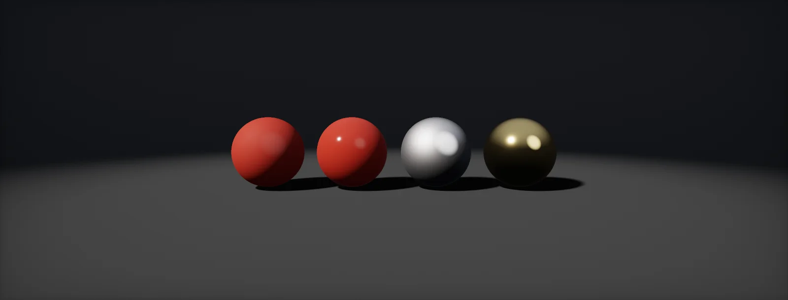

PBR Material Inputs
What each map of a PBR material means and which values are physical: base colour, metallic, roughness, normal, occlusion and height, the specular/gloss alternative, and how to check your work.

PBR principles
splits the work cleanly. You describe what a surface is, with a handful of measurable properties, and the lighting decides how it looks. A well-made material then reads correctly in a dark corridor, at noon and under a red warning light, without retouching. The shading maths is the topic of PBR BRDF; this unit is about the inputs you author.
The one physical rule behind the inputs: a surface cannot send back more light than arrives. Part of the light reflects at the surface (specular, about 4 % for most non-metals), the rest enters and comes back coloured by the base colour (diffuse), and whatever is left is absorbed:
That is why a base colour of pure white is wrong even for snow: nothing in nature sends back all of the diffuse light. The next chapters give the ranges that keep each input physical.
Base colour
The (albedo) map holds the colour of the surface as if it were lit evenly from all sides: no shadows, no ambient occlusion, no highlights. All of those come from the lighting, and painting them in makes the surface wrong under every other light.
For non-metals, real materials sit in a fairly narrow band. Substance's PBR guide recommends keeping the darkest values above roughly 30 to 50 and the brightest below about 240, in the sRGB 0–255 values your paint program shows. Check a value:
The reference marks are approximate. Note how much of the 0–255 range is spent on dark values: an sRGB value of 128 is only 22 % reflectance (linear values). Base colour textures are colour data, so their import setting has sRGB ticked.
Metallic
Metals and non-metals reflect light in different ways. A non-metal has a coloured diffuse part and a faint, uncoloured reflection (F0 ≈ 0.04). A metal has no diffuse part at all: it reflects strongly, and its reflection is coloured. The input switches between the two, and the base colour changes meaning with it: for a metal it is the colour of the reflection, so it must be bright (roughly 180–255 sRGB):
Values in between describe no real material: half diffuse, half dark reflection, a muddy grey. Use 0 or 1, and let in-between values appear only where two materials meet within a texel: the edge of rust on steel, dust on a metal plate, a scratch through paint. Approximate reflectance of common metals (linear, from Filament's table): silver (0.97, 0.96, 0.91), aluminium (0.91, 0.92, 0.92), iron (0.77, 0.78, 0.78), gold (1.00, 0.85, 0.57), copper (0.97, 0.74, 0.62).
Roughness
describes the microscopic bumps of a surface, too small for a normal map. A smooth surface reflects a sharp image of its surroundings; a rough one spreads the same light into a wide, dim highlight. The total amount of reflected light stays the same, only its spread changes. Unity uses smoothness, which is simply 1 − roughness:
Roughness is where most of a material's character lives: fingerprints on glass, worn paths on a floor, the satin sheen of handled wood. Paint it with as much care as the base colour, as a data map (sRGB off). The shader squares it internally (α = roughness², the GGX distribution) so that the slider feels even.
Normal, occlusion and height
Three more maps complete a typical material. The normal map fakes small shapes by changing the direction the surface faces per pixel (normal maps). The height map stores the same small shapes as heights, used for parallax, tessellation or blending. The map stores how hidden each point is from its surroundings.
Occlusion only applies to the light that comes from all around (sky, bounce light, reflections). Direct light from the sun or a lamp reaches a crevice that faces it just fine, and its shadow comes from shadow maps. Multiplying AO into the base colour darkens direct light too, which is why it is a separate input:
HDRP applies the AO input to indirect diffuse light and derives specular occlusion from it, so reflections in crevices also darken. Small-scale crevice darkening that should affect everything (dirt in cracks) belongs in the base colour, painted as dirt, not as AO.
Specular/gloss workflow
Older content and some engines use the specular/gloss workflow: a diffuse colour map, a specular colour map (F0 directly) and a glossiness map. It can describe the same materials, plus a few the metal workflow cannot (non-metals with an unusual F0). Converting from metal/roughness is direct:
Watch three conventions when moving materials between tools: smoothness versus roughness (invert), the green channel of normal maps (OpenGL in Unity and Substance by default, DirectX in Unreal), and which channel holds what in packed masks (packing layouts).
Value validation
Materials are judged under lighting, and lighting can hide mistakes. A routine that catches most of them:
- Neutral lighting first. Check materials in a scene with a calibrated sky or HDRI, fixed exposure (a lighting workflow) and no colour grading.
- Validate the base colour. HDRP's Rendering Debugger has a Material Validator that highlights base colours outside a luminance range and metals that are too dark. Substance Painter has a PBR Validate filter that does the same while you paint.
- Look at single inputs. The Rendering Debugger's Material view shows albedo, smoothness, metal or AO alone. Painted shadows in the albedo stand out immediately.
- Compare with a reference. Put a photo-scanned material or a known value chart in the same scene.
Build it in Unity HDRP
HDRP's Lit shader takes exactly the inputs of this unit. The steps set up a material with the stock shader, the same inputs in a Shader Graph, and an editor check for base colour ranges. Written for Unity 6 with HDRP 17; Unity 2022 LTS works the same apart from a few renamed menu entries.
- Create a material (Create > Material); HDRP assigns HDRP/Lit. Under Surface Inputs: Base Map (colour, sRGB on), Mask Map (sRGB off, layout R metallic, G AO, B detail mask, A smoothness), Normal Map (Texture Type Normal map).
- With a mask map assigned, the Metallic and Smoothness sliders become Remapping ranges: they scale the texture values, for example to make a whole material slightly rougher without repainting.
- For a height map, set Displacement Mode to
Pixel displacement(parallax occlusion) orVertex/Tessellation(needs the Tessellation option) and assign the Height Map. - Shader Graph version: create a Lit Shader Graph (Create > Shader Graph > HDRP > Lit Shader Graph). Sample the base map into Base Color, the normal map (Sample Texture 2D, Type
Normal) into Normal (Tangent Space), and the mask map throughMaskMap.hlsl. In the graph, add a Custom Function node. Set Type toFile, Source toMaskMap.hlsland Name toMaskMap(without the_floatsuffix). Add the inputs Mask (Vector 4), MetallicRange (Vector 2), SmoothnessRange (Vector 2), AORange (Vector 2) and the outputs Metallic (Float), Smoothness (Float), AO (Float), DetailMask (Float), in that order and with those types: they must match the function's parameters. - Check values: Window > Analysis > Rendering Debugger > Material. Material Validator highlights base colours outside a luminance range and metals that are too dark; the Material dropdown shows albedo, smoothness, metal or AO alone.
- Put
BaseColorRangeCheck.csin anEditorfolder. Select base colour textures and use Assets > Atlas > Check Base Color Range to log how many texels fall outside 30–240 sRGB.
#ifndef ATLAS_MASK_MAP_INCLUDED
#define ATLAS_MASK_MAP_INCLUDED
// HDRP mask map: R metallic, G ambient occlusion, B detail mask, A smoothness.
// Ranges remap 0..1 to (min, max), like the Lit material's Remapping sliders.
void MaskMap_float(float4 Mask, float2 MetallicRange, float2 SmoothnessRange, float2 AORange,
out float Metallic, out float Smoothness, out float AO, out float DetailMask)
{
Metallic = lerp(MetallicRange.x, MetallicRange.y, Mask.r);
AO = lerp(AORange.x, AORange.y, Mask.g);
DetailMask = Mask.b;
Smoothness = lerp(SmoothnessRange.x, SmoothnessRange.y, Mask.a);
}
#endif#if UNITY_EDITOR
using UnityEditor;
using UnityEngine;
// Logs how many texels of the selected base colour textures fall outside 30..240 sRGB.
// Meant for non-metals; metals are supposed to be bright.
public static class BaseColorRangeCheck
{
[MenuItem("Assets/Atlas/Check Base Color Range")]
static void Check()
{
foreach (var obj in Selection.objects)
{
if (!(obj is Texture2D tex)) continue;
// Blit into an sRGB render target and read it back: works without Read/Write Enabled.
var rt = RenderTexture.GetTemporary(tex.width, tex.height, 0, RenderTextureFormat.ARGB32, RenderTextureReadWrite.sRGB);
Graphics.Blit(tex, rt);
var prev = RenderTexture.active;
RenderTexture.active = rt;
var copy = new Texture2D(tex.width, tex.height, TextureFormat.RGBA32, false, false);
copy.ReadPixels(new Rect(0, 0, tex.width, tex.height), 0, 0);
copy.Apply();
RenderTexture.active = prev;
RenderTexture.ReleaseTemporary(rt);
Color32[] px = copy.GetPixels32();
Object.DestroyImmediate(copy);
int dark = 0, bright = 0;
foreach (var c in px)
{
int max = Mathf.Max(c.r, Mathf.Max(c.g, c.b)), min = Mathf.Min(c.r, Mathf.Min(c.g, c.b));
if (max < 30) dark++;
else if (min > 240) bright++;
}
float n = px.Length;
Debug.Log($"{tex.name}: {dark / n:P1} too dark (< 30), {bright / n:P1} too bright (> 240)");
}
}
}
#endifSmoothness, not roughness: if your textures come with roughness, invert it on export or in the packer (Texture Packing and Import Settings). Amplify Shader Editor: paste the function body into a Custom Expression node (mode Call with the file included, or Create with the code inline); inputs and outputs map the same way.
URP/Lit uses a Metallic Map (R metallic, A smoothness, with Source set to Metallic Alpha) and a separate Occlusion Map (G channel). The Shader Graph version is identical apart from the mask layout.
Material inputs Base Color, Metallic, Roughness, Specular (leave at 0.5, which is F0 = 0.04) and Ambient Occlusion; usually from an ORM texture (R AO, G roughness, B metallic) with compression Masks. The Base Color and Roughness buffer visualizations check values.
Sources and further reading
The formulas and engine details in this unit come from these references. Engine documentation changes between versions.
- GuideThe PBR Guide, parts 1 and 2Wes McDermott · Adobe Substance 3DThe metal/roughness workflow and value ranges for base colour from the artist side.
- DocsFilament: Material parameterizationGoogleBase colour, metallic and roughness definitions, and the table of metal reflectances.
- DocsHDRP Lit shader and Rendering DebuggerUnityLit material inputs, the mask map layout and the Material Validator.
- CoursePhysically Based Shading in Theory and PracticeSIGGRAPH course notesWhere the conventions in this unit come from.